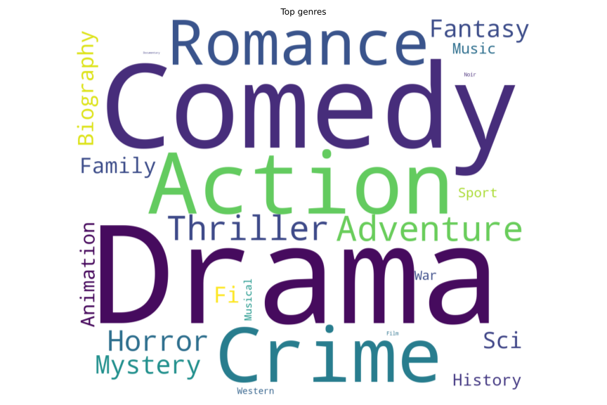

The model
In essence, a film revenue/review score predictor is a regression prediction: trying to find a trend line from the training dataset and using that to predict the outcome of an unreleased film. Our research found that two machine learning models would be good for this type of prediction: Extreme Gradient Boost (XGBoost) and Light Gradient Boost Machine (LightGBM). Both models are gradient boosted decision tree models: an ensemble machine learning algorithm that, as with traditional decision trees, assesses the data using the decision tree method, however, rather than using one decision tree, gradient boosted models create multiple trees sequentially, with each subsequent tree learning from the previous tree and thus progressively minimises an error gradient, resulting in a more accurate regression analysis and prediction.
Our process involved importing an IMDb dataset and performing a number of ETL steps to reduce the data and convert to numerical data types for training the ensemble machine learning algorithms.
Once the dataset was of a suitable size and datatype format, the .regressor() method from both XGBoost and LightGBM was used to determine a baseline accuracy
(measured using R-squared scoring), followed by a .feature_importances_ method to isolate the most important features.
A reduced dataframe using the most important features was then used to train new XGBoost and LightGBM models,
followed by hyperparameter optimisation/tuning to determine if further optimisation could be done to yield greater accuracy (i.e. a higher R-squared score.)
Data Wrangling
Our original dataset of IMDb film data included over 85,000 data points, with a variety of inputs to analyse. The data wrangling process involved focusing our dataset to items we perceived to be important for making accurate predictions for future films. The first step was to drop all rows of incomplete data, which immediately reduced our dataset to just over 8,900 rows. We deemed this to be a satisfactory sample size for analysis and reduced the dataset further on the budget column. The budget column included various currency symbols, thus we reduced it by isolating only data with the dollar symbol “$” under the assumption that all “$” budgets represent american films.
From this reduced dataset, we performed transformations to columns that had numerical data but were classified as non-numerical (e.g. object type.)
The columns “budget” and “worldwide_gross_income” had their currency prefix “$” removed from each datapoint and both columns then converted to integer types “int64”.
Data from the column “date_published” was in essence extracted to two numerical columns: “year” which extracted the year as an integer type (“int64”) and “day” which converted the day of the year for a film’s release into a numerical value from 1 to 365 to represent each day of the year.
The “date_published” column was subsequently dropped from analysis.
In order to “numberfy” the remaining string data, which were critical to representing the characteristics of each film - e.g. language, genre, country, actors, director, writer and production company - these datapoints were each extracted to a list, splitting the strings within each category to its individual elements (i.e. the first five actors credited in a film were separated as an item in a list) and then making every element in every list as a new column in the dataset and assigning a 1 where that item exists for each movie in the dataset and a 0 where it does not. Essentially, it is a simple binary classification, similar in intention to One-Hot Encoding but without converting the data into a 2D array.
Due to the large numerical values found within some columns, the data was scaled using the MinMaxScaler() method from SciKit Learn’s preprocessing library.
During our exploration, it was discovered that the columns that had the greatest effect on accuracy from scaling were the “duration” and “day” columns, thus only those two columns were scaled.
Feature Selection
Both the XGBoost and LightGBM models include a .feature_importances_ method which calculates the importance of each feature in training the predictive accuracy of the model.
While both models score each feature in terms of a positive value, the range of values differ between XGBoost and LightGBM.
The former appears to score features as decimal values (between 0 and 1) while the latter appears to score features as integer values from 0 and above.
Thus the conditional if statement differs between the two models only in terms of values to include in the conditional statement.
In other words, the method to extract the important features is the same, but the criteria is specific to each model (decimal values for XGBoost, integer values for LightGBM.)
In both revenue and review score training, our initial results showed XGBoost had many more important features than LightGBM. Out of a total of 1,870 features, 381 features for XGBoost’s revenue training model were deemed important compared to 116 features for LightGBM; similarly there were 445 important features for XGBoost compared to 114 features for LightGBM. As a result, when it came to training both models, we adopted the feature importance list from XGBoost as the LightGBM importance list did not significantly improve the accuracy (measured by R-squared score.)
For revenue, the most important feature ostensibly was budget, commanding a feature_importances_ score over 0.07, which was more than double the next-most important feature at just under 0.03.
Unexpectedly, eight of the top ten features were individual entities/people, rather than broad categories.
For example, Dreamworks Animation was the second-most important feature in our model, while the fourth to tenth-most important features were a series of specific qualities, such as specific languages, genre, directors and actors.
The third most important feature, “popularity” (the number of review scores submitted by IMDb users, e.g. if a film had 20,000 users submit a review score for that film, the “popularity” value would be 20,000), was the only other broad category in the top ten.
This may suggest a strong correlation between budget and revenue, however, further analysis may reveal how they are correlated. A surprising aspect is the number of individualistic important features, including that Dreamworks Animation is the second-most important feature.
This may be a quirk of the dataset, and may reveal more about the users of IMDb favouring animations, particularly from Dreamworks, or it may suggest an unbalanced dataset where it is heavily skewed by one or two specific features.
Regarding user review scores (“Rating”), a similar trend of high importance over individualistic/specific features compared to broad categories was evidenced and indeed more pronounced than the revenue model. Films under the genre of “drama” were the most important feature, with a score of almost 0.05 and more than four times greater than the next most important feature (“popularity”) at almost 0.015. Genres collectively appear to be very important, accounting four of the top ten, while the other features appear disparate with no obvious correlation. Similar to the revenue model, “popularity” plays an important role in this model, with further analysis required to determine how user input correlates to review scores and the predictive nature of popularity for review scores. It should also be noted that the R-squared score for the review score predictor was a relatively low 50-60%, thus it may suggest that the model struggled to find meaningful correlations in the dataset to create accurate regression predictions.
Accuracy of Predictors
The initial accuracy of each model was largely indicative of our final model, we were only able to marginally improve accuracy with important features selection and hyperparameter tuning (i.e. GridSearchCV). The revenue predictor using both XGBoost and LightGBM was consistently higher than the review score predictor, yielding mid-to-high 70s per cent R-squared scores, compared to the review score predictor’s mid 50s to low 60s per cent R-squared scores.

While each model’s initial R-squared score proved very close to the value of the final models used for our app, this was only discovered by going through the process outlined above. As such, we trained the initial models to determine most important features, then isolated the dataset on the important features for training, followed by hyperparameter tuning using GridSearch CV to further optimise our model. Using GridSearchCV provided only marginal gains of a few percentage points at best, which shows not only the highly optimised nature of the models using default settings, but also raises the question of the costs/benefits of hyperparameter tuning such as using GridSearchCV and other optimisers. In particular, XGBoost required a significantly longer time to run GridSearchCV and more processing power than LightGBM, as much as 12x longer to run. Whilst this favours LightGBM’s hyperparameter tuning ability, it was still a lengthy process (up to an hour in some cases and depending on one’s computer processing power) and ultimately yielded lower R-squared scores than XGBoost, albeit by a small margin.
Another interpretation of the R-squared values could be that the low scores, particularly for review-score predictions, is not necessarily a sign of an inaccurate model. A good model may have a low R-squared value and a model that does not fit the data could have a high R-squared value. A low R-squared value model is typical when predicting human behaviour, such as psychology, which is evidenced in our results for the review score models. In contrast, high R-squared values could prove inaccurate, where a regression systematically over or under-predicts the data (bias) and a plot comparing residual and fitted values reveals patterns instead of randomness, indicating a bad fit.
As XGBoost was deemed the most accurate, this was used for both predictors and a prediction to actual value scatter plot was plotted for review. The revenue predictions show a higher degree of inaccuracy at the lower end of revenue with a tendency to overestimate, but become increasingly more accurate at higher values. Surprisingly, despite the lower R-squared score, the review score predictions show a relatively accurate distribution as evidenced by the shape of the scatter plot along the line indicating accuracy (where predicted values = actual values). The predictor appeared to struggle slightly by underestimating some scores, with a lot of predictions hovering around the 2 to 4 range and, like the revenue predictor, tended to become more accurate at higher values.